Расчеты: расходы, диаметры, уклоны канализации

Расчеты в проектировании – это не формальность, а инструмент, который переводит проект из категории «предположительно» в категорию «обоснованно».
Результаты расчетов:
- Обеспечение параметров. Расчеты гарантируют, что в самой удаленной точке системы будет обеспечен требуемый напор, а канализационный сток достигнет самоочищающей скорости.
- Экономическая эффективность. Правильный расчет диаметров предотвращает перерасход материалов и избыточные потери напора.
- Обоснование для экспертизы. Таблицы гидравлического расчета - неотъемлемая часть пояснительной записки раздела «Водоснабжение и канализация» в проектной документации.
Расчеты ВК – это не высшая математика, это логика и арифметика. В этом уроке мы разберем три кита проектирования:
- Сколько воды нужно
- Какой диаметр трубы выбрать
- Как проложить канализацию
На сегодняшний день представлено много программ, выполняющих расчет по исходным данным, а также по подгруженной модели. Но важно хотя бы раз просчитать все вручную, чтобы затем понимать методику и неточности в расчетах программы.
Нормативная база
Нормы постоянно совершенствуются, поэтому очень важно знать, на что обращать внимание, откуда брать цифры для расчетов, чтобы можно было подставить их в расчет. Смотрите ниже список документов, которые пригодятся вам для расчетов:
- СП 30.13330.2020 «Внутренний водопровод и канализация зданий».
- СП 32.13330.2018 «Канализация. Наружные сети и сооружения».
- СП 131.13330.2025 «Строительная климатология».
- СанПиН 2.1.3684-21 «Санитарно-эпидемиологические требования к содержанию территорий городских и сельских поселений, к водным объектам, питьевой воде и питьевому водоснабжению населения, атмосферному воздуху, почвам, жилым помещениям, эксплуатации производственных, общественных помещений, организации и проведению санитарно-противоэпидемических (профилактических) мероприятий».
Как осуществлять расчет расходов воды
Расчет основан на СП 30.13330.2020 «Внутренний водопровод и канализация зданий». Метод учитывает не одновременность использования всех санитарно-технических приборов.
Исходные данные для расчета:
- Для расчета принят многоквартирный 10-этажный 2-секционный жилой дом, расположенный во 2-й строительно-климатической зоне.
- Количество квартир – 240.
- Количество жителей, чел. – 821.
- Количество приборов для холодной воды, шт. – 960.
- для горячей воды, шт. – 720.
Данные по одной квартире:
- Количество жителей, чел. – 3.
- Количество сантехнических приборов, для холодной воды, шт. – 4.
- для горячей воды, шт. – 3.
Квартира оборудована санитарно-техническими приборами:
- смеситель для кухонной мойки.
- смеситель для ванны длиной 1700 мм.
- смеситель для умывальника.
- кран для унитаза со смывным бачком.
Берем подходящие для нас данные из таблицы А.2 СП 30.13330.2020
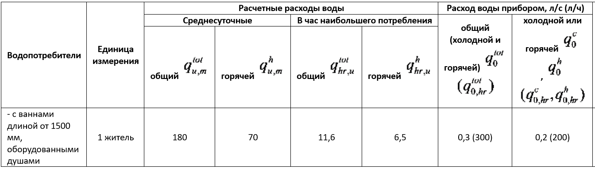
Вероятность действия санитарно-технических приборов
Вероятность действия санитарно-технических приборов Ptot общая для горячей и холодной воды:
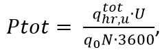
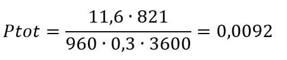
NPtot = 960 · 0,0092 = 8,832; αtot = 3,798
Вероятность действия санитарно-технических приборов Ph горячей воды:
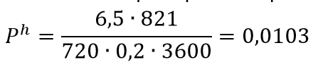
NPh = 720 · 0,0103 = 7,416; αh = 3,369
Вероятность действия санитарно-технических приборов Рс холодной воды^
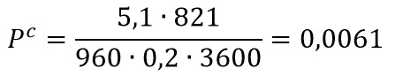
NPc = 960 · 0,0061 = 5,856; αc = 2,858
Для расчета секундного расхода необходимо определить коэффициент α - по приложению Б, в зависимости от количества приборов N и вероятности их действия Р.
Максимальный секундный расход воды
Максимальный секундный расход воды на расчетном участке сети, общий, горячей и холодной определяется по формуле, л/с:
q=5q0·α, (формула 2, СП 30.13330.2020);
Максимальный секундный расход воды qtot общий:
q=5·0,3 ·3,798 = 5,697 л/с
Максимальный секундный расход воды qh горячей
q=5·0,2 ·3,369= 3,369 л/с
Максимальный секундный расход воды qc холодной:
q=5·0,2 ·2,858= 2,858 л/с
Вероятность использования санитарно-технических приборов для системы в целом:
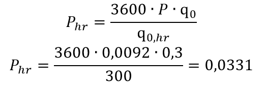
NPtot = 960 · 0,0331 = 31,776 ; αtot = 9,957
Вероятность использования санитарно-технических приборов
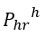
горячей воды:
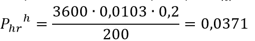
NPh = 720 · 0,0371 = 26,712; αh = 8,701
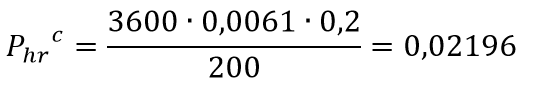
NPc = 960 · 0,02196 = 21,08; αc = 7,287
Максимальный часовой расход воды
q hr = 0,005·q0,hr · α0,hr, формула 10, СП 30.13330.2020).
Максимальный часовой расход воды общий:
q hr = 0,005·300 · 9,957 =14,9355 м3/ч
Максимальный часовой расход воды горячей воды:
q hr = 0,005·200 · 8,701 =8,701 м3/ч
Максимальный часовой расход воды холодной воды:
q hr = 0,005·200 · 7,287 =7,287 м3/ч
Средний часовой расход воды за период (сутки, смена)
Средний часовой расход воды за период (сутки, смена), м3/ч - водопотребления определяется по формуле:
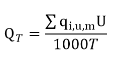
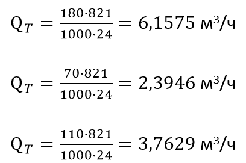
Результаты обычно записывают в форму таблицы или форму, предусмотренную ЗнП.
Расход теплоты для нагрева воды
Расход теплоты для нагрева воды, на нужды горячего водоснабжения с учетом тепловых потерь в подающих и циркуляционных трубопроводах и оборудования (полотенцесушителях, водоподогревателях и др.), кВт:
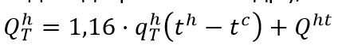
Принимаем значения температуры при отсутствии данных,
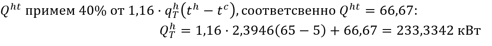
Расчет отведения сточных вод санитарно-бытовой канализации зданий и сооружений
Расчет расходов приходится на каждый стояк, по количеству присоединяемых приборов.
Расчетные расходы стоков для стояка, с числом присоединенных приборов N = 30 шт., и количеством пользователей U = 20 человек.
Исходные данные все те же. Берем NPtot = 30 · 0,0092 = 0,276; αtot = 0,518
qtot=5·0,3 ·0,518 = 0,777 л/с
Для стояков системы внутренней канализации расчетным расходом является максимальный секундный расход стоков от присоединенных к стояку санитарно-технических приборов и не вызывающий у них срыва гидравлических затворов. Максимальный секундный расход стояка, л/с:
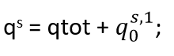
где
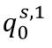
- максимальный секундный расход стоков от прибора с максимальным водоотведением по приложению А, в данном случае от смывного бачка унитаза равный 1,6 л/с:
qs = 0,777 + 1,6 = 2,377 л/с
Канализация - это безнапорная река. Здесь нет насоса, вода течет сама. Ошибетесь с уклоном - получите вечный засор.
Уклоны канализации
В СП приведены рекомендуемые значения для присоединения приемников сточных вод к канализационным стоякам поэтажные трубопроводы диаметром 40 - 50 мм следует прокладывать с уклоном 0,03, а диаметром 75 - 100 мм - с уклоном 0,02.
Гидравлический расчет отводных напорных и безнапорных (самотечных) горизонтальных трубопроводов (выпусков) следует выполнять по таблицам или формулам, с учетом шероховатости материала труб, вязкости жидкости и взаимозависимости средних скоростей течения стоков и гидравлических сопротивлений.
Расчет отведения дождевых и талых вод с кровли зданий и сооружений
Исходные данные те же, только добавим значение площади кровли F=510 м2.
Расчетный расход дождевых вод Q, л/с, с водосборной площади следует определять по формуле:
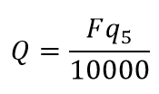
q5 - интенсивность дождя, л/с, с 1 га (для данной местности), продолжительностью 5 мин при периоде однократного превышения расчетной интенсивности, равной 1 году, определяемая по формуле:
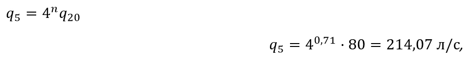
тогда
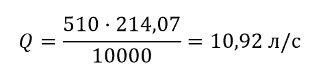
Грамотный гидравлический расчет – это не формальность, а фундамент работоспособности и долговечности инженерной системы. Понимание методики расчета, даже при использовании программных средств, позволяет проектировщику принимать обоснованные решения, избегать ошибок и создавать эффективные проекты, соответствующие всем современным требованиям.
Практическая часть